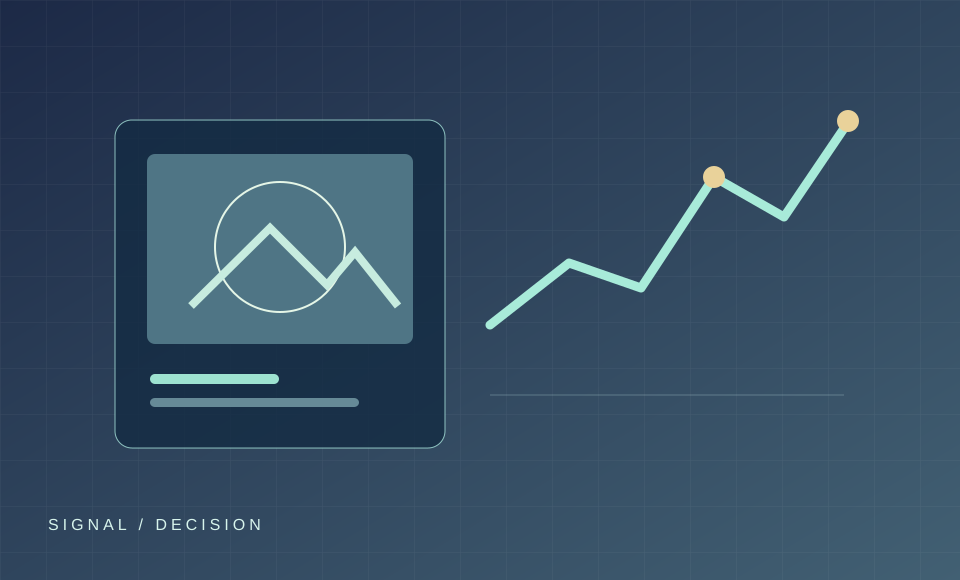

PROJECT 02 / AI DECISION SUPPORT
AI 마케팅 의사결정 지원 PoC
Vision AI와 트렌드 감지를 활용하는 마케팅 의사결정 지원 시스템의 방향을 검토한 프로젝트 후보입니다.
상태 확인 필요Vision AI 활용 방향트렌드 감지 방향

01 / BACKGROUND
문제 배경
마케팅 의사결정에는 다양한 시각 정보와 변화 신호를 함께 살피는 과정이 필요할 수 있습니다. 이 프로젝트는 AI를 이용해 판단 근거를 정리하는 시스템 방향을 다룹니다.
02 / OBJECTIVE
검토할 목표
어떤 입력 정보를 사용하고, 누구의 어떤 결정을 지원할지 정의해야 합니다. 현재 구현 범위나 PoC 결과는 확인되지 않았습니다.
03 / METHODOLOGY
방법 설계
- 대상 업종과 사용 시나리오: [확인 후 입력]
- 시각 정보 및 트렌드 데이터 출처: [확인 후 입력]
- 제안 결과의 평가 방법: [설계 후 입력]
04 / RESULTS & CONTRIBUTION
결과와 본인 기여
시제품, 분석 결과, 담당 역할은 확인된 내용이 없어 비워 둡니다. 실제 기획 문서나 구현물이 확인되면 그 범위만 기록합니다.
05 / NEXT STEP
다음에 확인할 것
사용자 문제와 입력 데이터, 실제 진행 상태를 확인하고 PoC가 검증해야 할 가설을 구체화합니다.